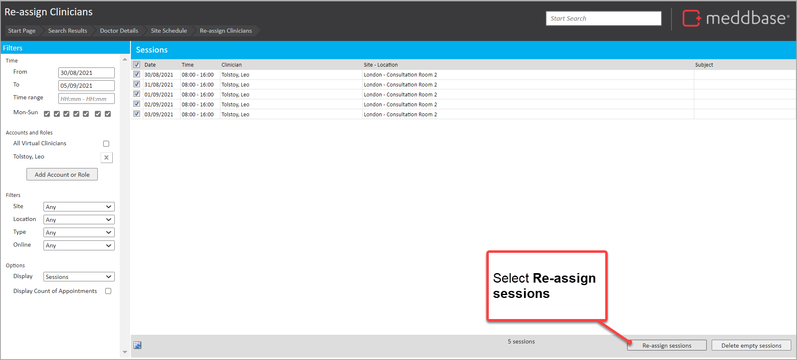
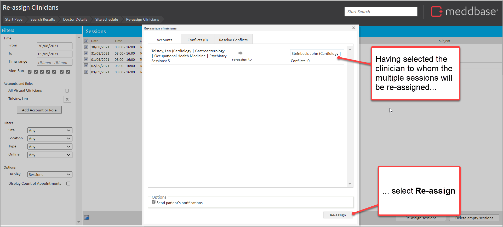
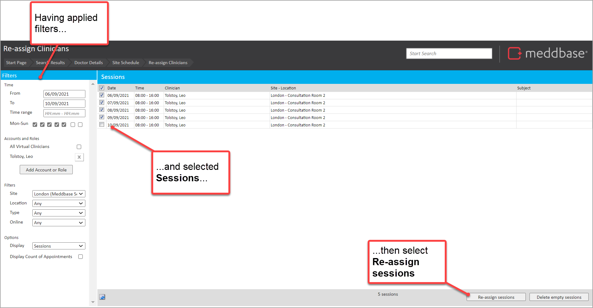
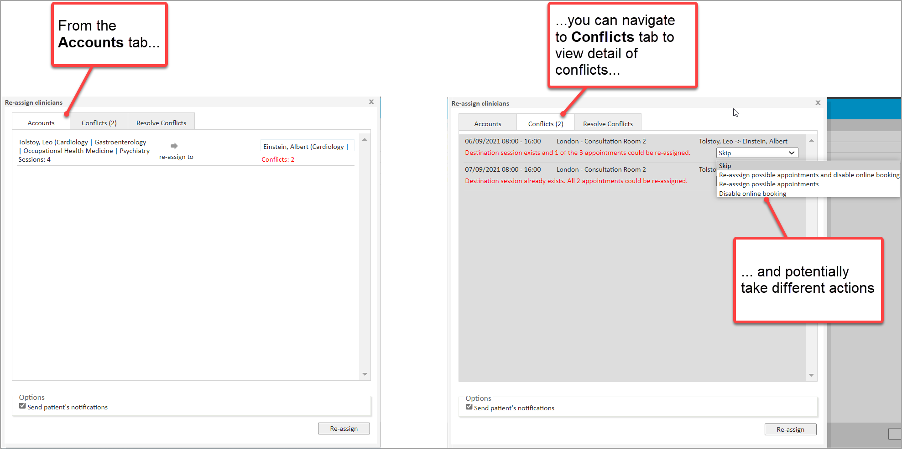
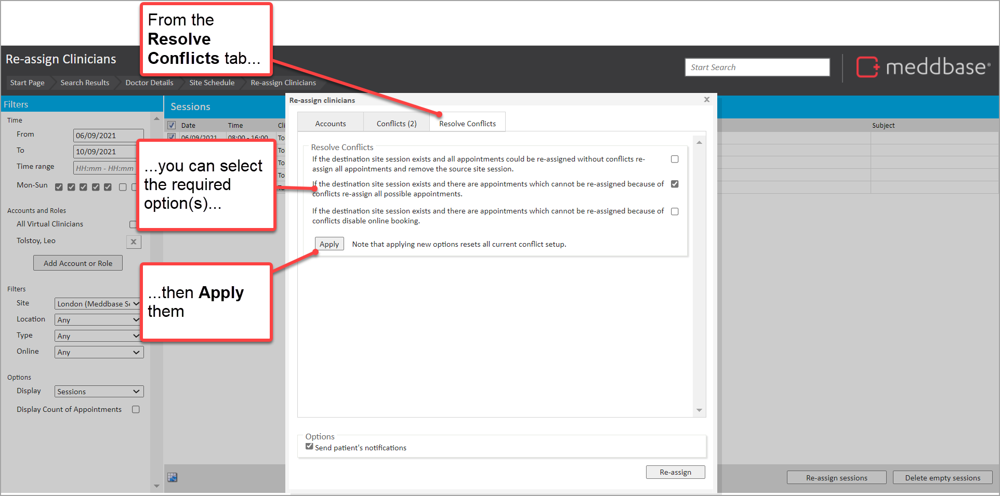
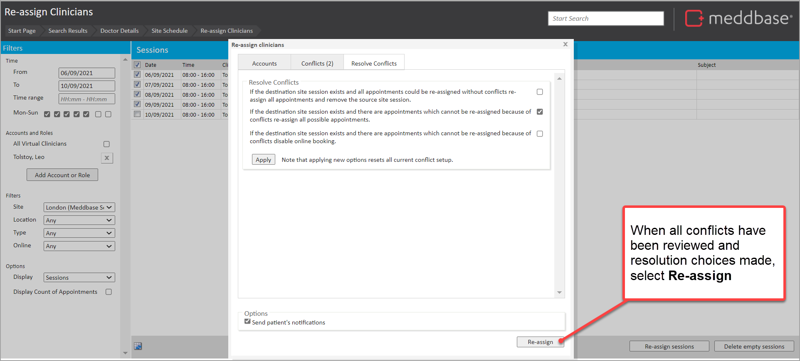
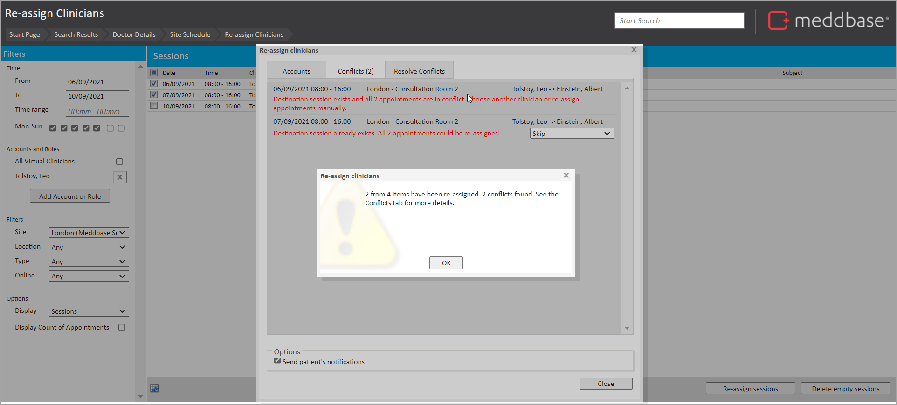
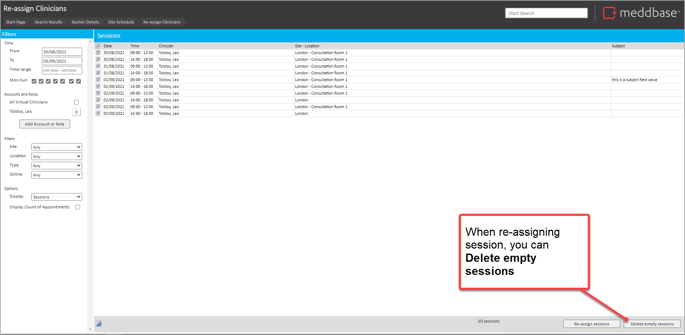
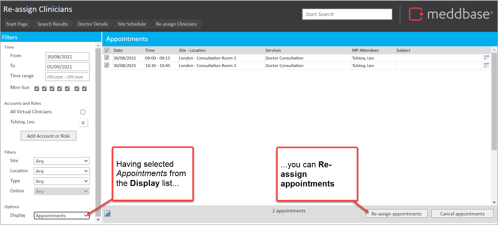
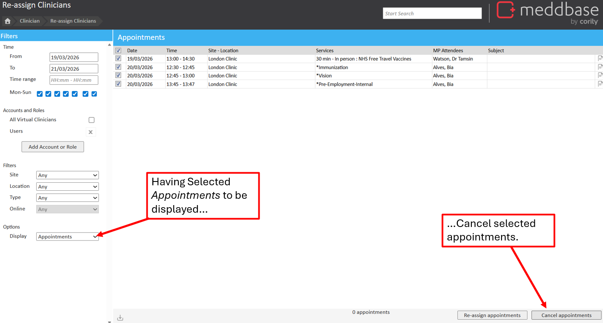

Scheduled sessions and appointments for clinicians (or virtual clinicians) are not necessarily fixed. For example, should a clinician take ill then the day’s appointments may need to be transferred. Or, where a doctor is on maternity leave, multiple scheduled sessions or appointments may need to be re-assigned, cancelled or removed. The Re-Assign tool is also able to delete empty sessions on Mass.
This article outlines how to access the tool and the steps you can take to re-assign sessions and appointments in the following scenarios:
1 - Re-assigning a single session
2 - Re-assigning multiple sessions
3 - Re-assigning multiple sessions where there are conflicts
It also provides a few hints and tips about further things you can do.
Re-assign Clinicians Tool
The Re-assign Clinicians tool can be accessed from a single site session of a user, or from the Clinician > Re-assign Clinicians tile.
In the Re-assign Clinicians area, there are search filters along the leftmost panel of the screen, followed by actions on the bottom right.
Time
From & To- Set the search range to return sessions/appointments for.
Time Range - Set a time range to return sessions/appointments for.
Mon-Sun - Set days of the week to return sessions/appointments for.
Accounts and Roles
All Virtual Clinicians - Display all virtual clinicians (Yes/No).
Add account or role - Add the user, or role group, who requires sessions/appointments to be reassigned or cancelled.
Multiple role groups/users can be added to h
Filters
Site - Filter results to show based on site.
Location -Filter results to show based on location.
Type - Filter results based on appointment type.
Online - Filter results based on if online booking is enabled for the site session.
Options
Sessions - Set to sessions by default. Set to show all site sessions within the filtered range
Appointments - Set to show a breakdown of all appointments in the filtered range.
Display Count of Appointments - Only appears when Sessions is selected as a display option. Easily identify which site sessions have appointments occupying time.
Selection of session - Select or deselect sessions/appointments to change. Check the box at the top to select all/unselect all on mass.
Select the individuals or role group whose sessions you wish to re-assign.
Site/Location/Type
Filter sessions belonging to a certain site or location. Or of a specific appointment type.
Display
Choose whether you are re-assigning whole sessions or just individual appointments.
Display Count of Appointments
When ticked will show a count of the number of appointments in each session.
In this simple example, we'll re-assign the sessions that are selected by default.
To continue from here:
4. Select Re-assign sessions at the bottom right of the screen

5. In the Re-assign clinicians screen that is now presented,
Select the field labelled Click to select account
From the menu that appears select Change
6. In the Select Account screen that appears
Input the search criteria in the left-hand panel
Select the clinician from the results
7. Back in the Re-assign clinicians dialogue select Re-assign in the bottom right of the screen

8. Click Yes to confirm the re-assignment.
The multiple sessions are re-assigned and you can close any open dialogue screens for re-assignment.
Scenario 3 - Re-assigning sessions where there are conflicts
Scenario 2 illustrated a 'happy path' showing no conflicts in the re-assignments. Where there are potential conflicts, such as existing bookings, Meddbase will provide you with a range of options to manage them.
To re-assign sessions and take action with conflicts:
1. Navigate to the Site Schedule for the clinician from whom the sessions are to be re-assigned (similar to the initials steps in Scenario 1 above)
2. Navigate to the week from which sessions should be re-assigned
3. Select the Re-assign button from the top of the screen
4. In the Re-assign Clinicians screen window,
Apply the required filters
Choose the sessions to be re-assigned
Select Re-assign sessions in the bottom right of the screen

5. Select the required clinician to whom the sessions should be re-assigned (in a similar way to steps 5-6 in Scenario 2 above)
The count of conflicts is shown in the Accounts tab of the Re-assign clinicians screen.
6. Optionally, navigate to the Conflicts tab to view the detail of the conflicts

From here you can view the detail of the conflicts and take actions such as:
Skip (the re-assignment)
Re-assign possible appointments
Disable online bookings
You can get Meddbase to help you with this process of resolving conflicts. To do this:
7. Navigate to the Resolve Conflicts tab
Select the required Resolve Conflicts tick-box
Select Apply
Click on OK to the information message about what conflicts that will be solved

When you have completed your review of conflicts and made the required selections:
8. Select Re-assign in the bottom right of the screen

9. In the Re-assign Items dialogue asking you to confirm, click Yes
The re-assignment is carried out. Where there are unresolved conflicts, these are presented in the Conflicts tab.

From here you can review the detail of the conflicts and potentially take further action, such as re-assigning appointments to alternative clinicians.
Did you know?
There is a range of other useful things you can do when re-assigning sessions. These are noted below.
Delete empty sessions
From the Re-assign Clinicians screen, you can Delete empty sessions. This is useful if too much availability has been set for an account or role group, based on date ranges and other filters usch as site, location and if online booking is enabled.

Re-assign appointments
From the Re-assign Clinicians screen, you can toggle the display to Appointments and then re-assign appointments rather than sessions.

Cancel appointments
From the Re-assign Clinicians screen, you can toggle the display to Appointments and then cancel appointments in bulk.

You can re-assign sessions for extended date ranges (beyond a week)
From the Re-assign Clinicians screen, you can extend the date range of sessions to be re-assigned to multiple weeks.